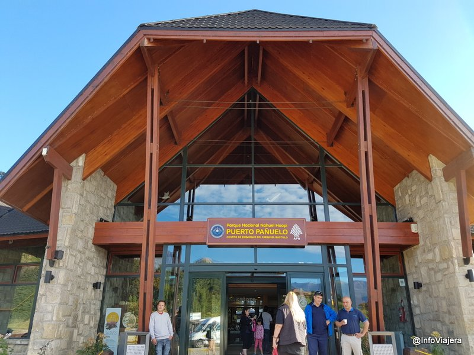
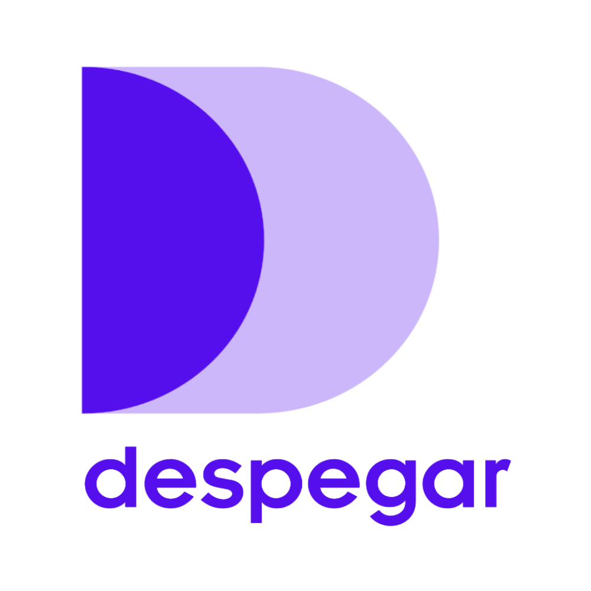

null
Title H1
Title H2
Title H3
Cualquier visita a San Carlos de Bariloche parece no estar
completa sin alguna actividad que incluya al gigantesco lago Nahuel Huapi.
En nuestra breve visita del mes de febrero nos habíamos reservado un día
entero para realizar una excursión, queríamos hacer alguna de jornada completa,
y queríamos hacerla con algún prestador de calidad.
Luego de una breve investigación y charlas con amigos,
nos decidimos por la empresa Turisur.
Nos contactamos con la empresa y coordinamos para participar
en su excursión Puerto Blest y Cascada de los Cántaros.

Parque nacional de Bariloche
Lo que necesitas si quieres ir a Bariloche:
- Dinero:
o naciendo rico (dificultad facil)
- Tiempo:
pero si puede ser 30 dias, mejor.
- Empanadas:
¡Viaja ya con un 88% OFF comprando tu boleto de avión con DESPEGAR!
